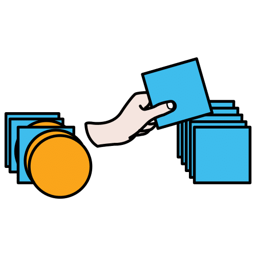
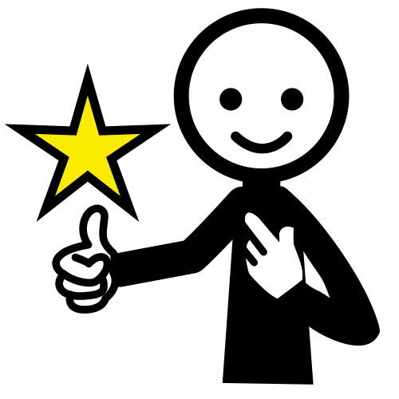
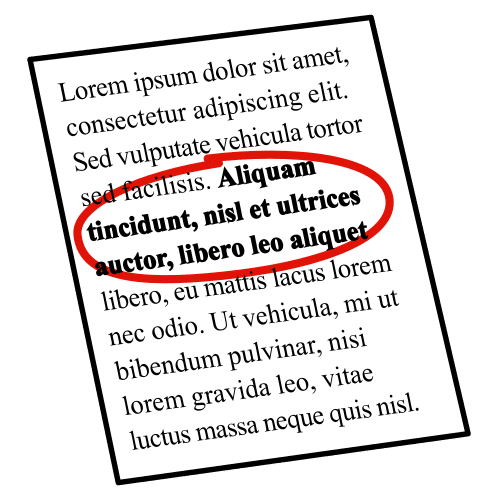
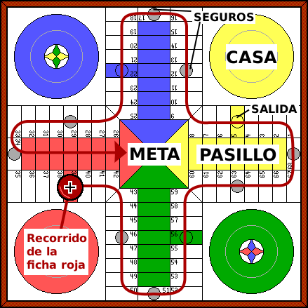
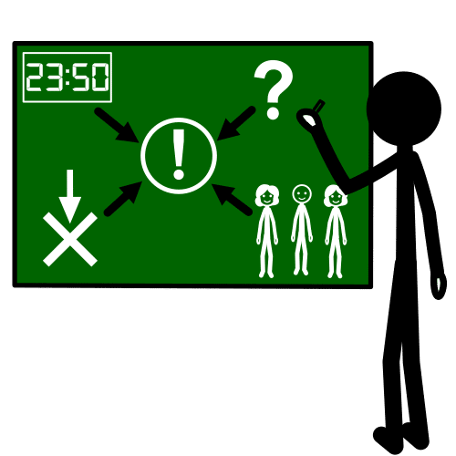
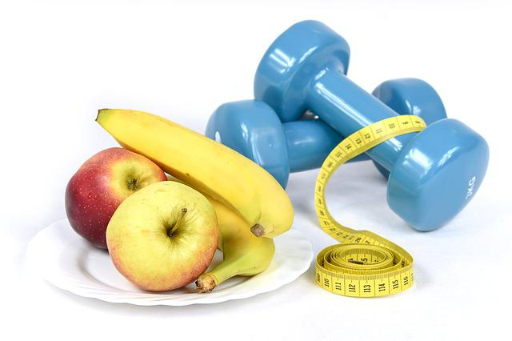
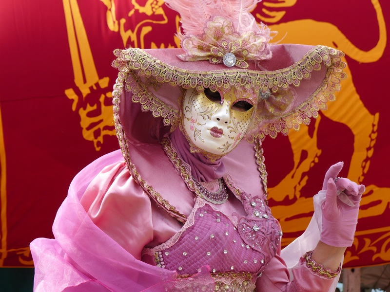

Apartamento

- Definición:
- Piso pequeño para vivir.
- Ejemplo:
- Mi tía tiene un apartamento en la playa.
Aportar
- Definición:
- Añadir, dar, contribuir.
- Ejemplo:
- Su grupo realizó aportaciones muy interesantes sobre el cambio climático.
Batidora

- Definición:
- Electrodoméstico que se utiliza para batir y mezclar alimentos.
- Ejemplo:
- Trituré el tomate con la batidora para hacer salmorejo.
Bol

- Definición:
- Cuenco sin asas que se utiliza para cocinar.
- Ejemplo:
- Para hacer el bizcocho mezcle todos los ingredientes en un bol.
Cantidad

- Definición:
- Número de cosas que hay.
- Ejemplo:
- En tu descripción hay gran cantidad de adjetivos.
Clasificar

- Definición:
- Ordenar en clases a partir de un criterio.
- Ejemplo:
- Vamos a clasificar estos huevos por su tamaño.
Concreto/a
- Definición:
- Se dice de algo que es simple y claro para las personas.
- Ejemplo:
- Yo quiero una pelota roja. Mi deseo es muy concreto.
Corregir

- Definición:
- Reunión de todo el grupo para hablar sobre temas de interés común y tomar decisiones.
- Ejemplo:
- En la asamblea decidimos ver una película.
Detalle

- Definición:
- Parte de algo que no es la parte más importante, pero es una parte que vemos.
- Ejemplo:
- Mi padre puso muchos detalles en mi tarta.
Entorno

- Definición:
- Características de un lugar.
- Ejemplo:
- Aquel entorno era agradable.
Favorito

- Definición:
- Con preferencia entre otros.
- Ejemplo:
- De entre todos los animales, el león es mi favorito.
Fuente

- Definición:
- Plato grande y hondo que se utiliza para servir la comida en la mesa.
- Ejemplo:
- Mi padre puso la ensaladilla rusa en una fuente.
Gastronómico/a

- Definición:
- Que trata sobre los platos típicos de un lugar.
- Ejemplo:
- Hicimos un tour gastronómico sobre Andalucía.
Idea clave

- Definición:
- Idea más importante del tema sobre el que hablamos o escribimos.
- Ejemplo:
- La maestra apuntó las ideas clave del tema en la pizarra.
Ingrediente

- Definición:
- Sustancia que forma parte de una mezcla.
- Ejemplo:
- Compra los ingredientes para cocinar.
Instrucciones

- Definición:
- Conjunto de reglas o advertencias para algún fin.
- Ejemplo:
- Las instrucciones para montar la estantería eran complicadas.
Intercambiar

- Definición:
- Cambiar mensajes, objetos... con dos o más personas.
- Ejemplo:
- Los niños intercambiaron los cromos repetidos.
Investigar
- Definición:
- Estudiar un tema en profundidad.
- Ejemplo:
- Pedro sabe mucho de ese tema porque lo ha investigado a fondo.
Organizar

- Definición:
- Poner orden. Preparar. Estructurar.
- Ejemplo:
- Es difícil organizar la excursión.
Origen

- Definición:
- Momento en el que empieza una cosa.
- Ejemplo:
- El chocolate que probamos era de origen inglés.
Portavoz

- Definición:
- Persona que ha sido elegida para representar a un grupo y hablar en su nombre.
- Ejemplo:
- El equipo elige un portavoz.
Preparar

- Definición:
- Seguir los pasos necesarios para hacer algo.
- Ejemplo:
- Mi padre preparó todos los ingredientes para hacer la tarta.
Proponer
- Definición:
- Recomendar o presentar una tarea.
- Ejemplo:
- Te propongo que escribas una carta.
Receta

- Definición:
- Texto sobre un plato donde aparecen los ingredientes, cantidades y el modo de elaborarlo.
- Ejemplo:
- Seguí los pasos de la receta de tarta de queso.
Revisar
- Definición:
- Examinar algo con cuidado y atención.
- Ejemplo:
- Es importante revisar el trabajo antes de entregarlo.
Saludable

- Definición:
- Algo que es bueno para la salud.
- Ejemplo:
- Debemos comer alimentos saludables.
Superar
- Definición:
- Lograr pasar las dificultades.
- Ejemplo:
- Juani consiguió superar el examen de lengua.
Tradicional

- Definición:
- Que se comunica, se transmite o se mantiene de generación en generación.
- Ejemplo:
- En mi pueblo es tradicional ir en fiestas a comer al campo.
Utensilio

- Definición:
- Objeto fabricado que se usa como herramienta de trabajo o para actividades diarias.
- Ejemplo:
- Mi hermano Marcos tiene muchos utensilios de cocina: cuchillos, tijeras, sartenes, espátulas y muchos más.
Valorar
- Definición:
- Acción de reconocer o darse cuenta del trabajo o esfuerzo de una persona
- Ejemplo:
- El maestro valora el esfuerzo del equipo.
Vigilar
- Definición:
- Observar atentamente a una persona o cosa, para evitar que sufra o cause algún daño o peligro.
- Ejemplo:
- Vigila el guiso para que no se queme.